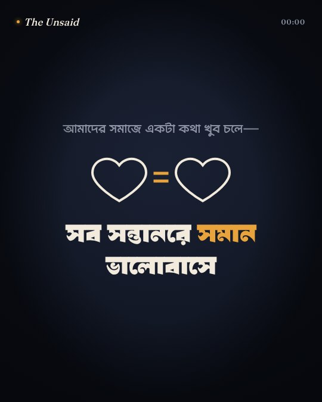
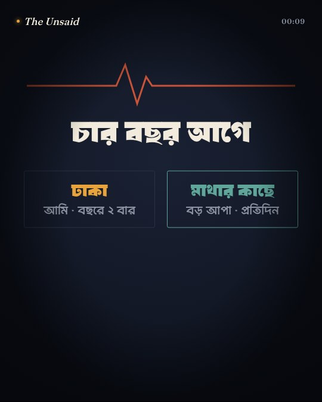
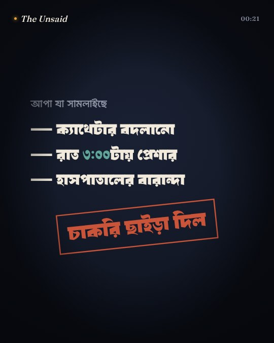
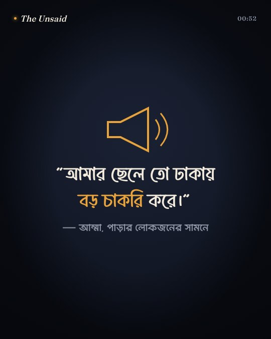
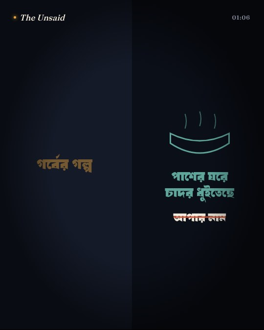
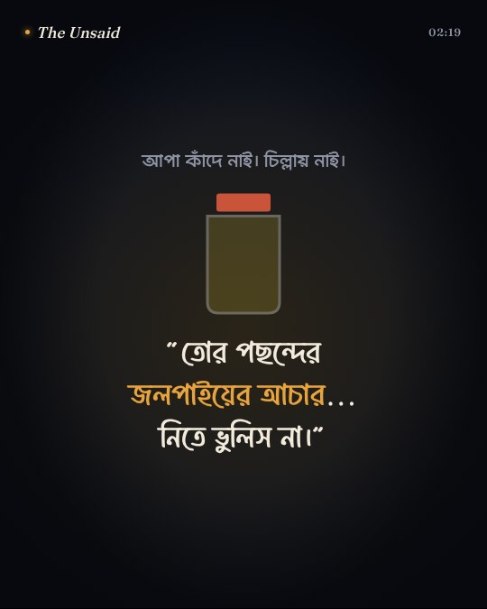
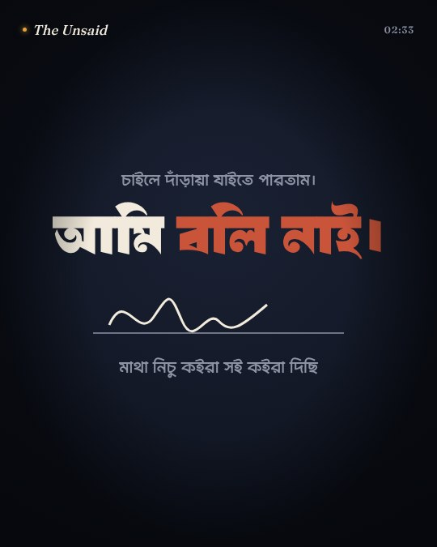
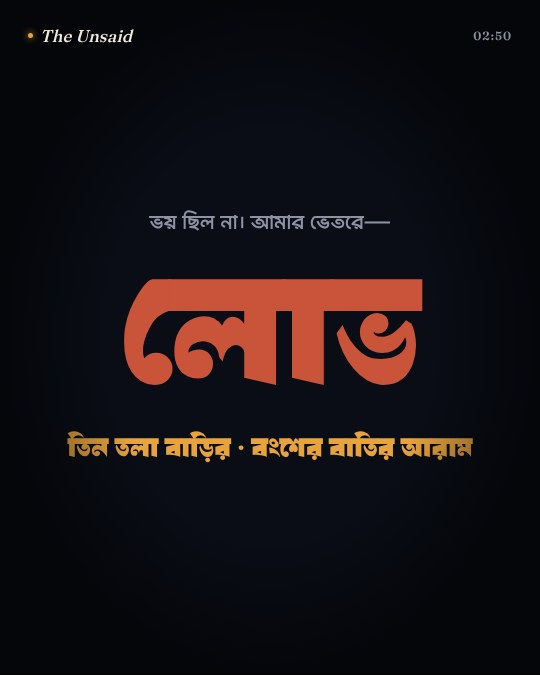
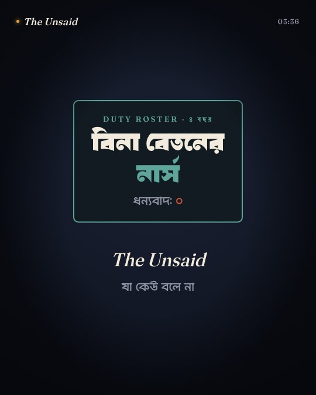

স্টোরিবোর্ড · ভয়েসওভার ৩:৪৫ · ১৮টা সিন · ৪টা চরিত্র
The Unsaid
“বাবা-মা নাকি সব সন্তানরে সমান ভালোবাসে” — ভয়েসওভারের জন্য মোশন গ্রাফিক্সের পরিকল্পনা। প্রতিটা ফ্রেম আসল ফন্ট দিয়ে বানানো স্টাইল-ফ্রেম; ফাইনাল ভিডিওতে এগুলো অ্যানিমেটেড হবে। টাইমকোড আনুমানিক, বানানোর সময় শব্দ ধরে ধরে মেলানো হবে।
ফরম্যাট1080×1350 (4:5), 30 fps, MP4
ব্র্যান্ড“The Unsaid” — উপরের বাম কোণায়, সারা ভিডিও জুড়ে; শেষে এন্ড কার্ড
ফন্ট (লিপিঘর)আলিনুর সংবাদপত্র — হুক টেক্সট · আলিনুর তৎসম — সাধারণ লেখা · আলিনুর নক্ষত্র — সংলাপ
টেক্সট স্টাইলসাবটাইটেল না; প্রতিটা লাইনের মূল শব্দগুলো কিনেটিক হুক টেক্সট হিসেবে আসবে
অডিওআপনার ভয়েসওভার + নিজে বানানো সাউন্ড ইফেক্ট ও নিচু ড্রোন/পিয়ানো স্কোর, -14 LUFS
রঙের মানে (পুরো ভিডিওতে একই থাকবে)
অ্যাম্বার — ছেলে: টাকা, গর্ব, বংশ
টিল — আপা: সেবা, ঘাম, অদৃশ্য শ্রম
রাস্ট — সত্যের আঘাত: মিথ্যা, লোভ
চরিত্র
ফ্ল্যাট ভেক্টর স্টাইল, যাতে লাইন-আর্ট আর টাইপোগ্রাফির সাথে মিশে যায়। প্রতিটা অংশ (মাথা, হাত, চোখ, ধোঁয়া) আলাদা লেয়ার, তাই ভিডিওতে আলাদা আলাদা নড়াচড়া করানো যাবে। পোশাকের রং সেই একই রঙের মানে মেনে চলে।
সিন বাই সিন















অনুমোদনের আগে দেখে নিন
- সিন ১২ (আপার হাত থেমে যাওয়া) হবে ভিডিওর মূল মুহূর্ত: পুরো ফ্রেম আর সব শব্দ ঠিক ১ সেকেন্ড থেমে থাকবে।
- ছবি বা ফুটেজ থাকবে না; সবকিছু লাইন-আর্ট আইকন আর টাইপোগ্রাফি দিয়ে। বাস্তব ছবি বা ইলাস্ট্রেশন লাগলে জানান।
- বিকাশের লোগো ব্যবহার হবে না, শুধু “বিকাশে ৳২০,০০০” লেখা থাকবে।
- রং, ফন্ট, কোনো সিনের আইডিয়া বা ট্রানজিশন বদলাতে চাইলে সিন নম্বর ধরে বলুন।